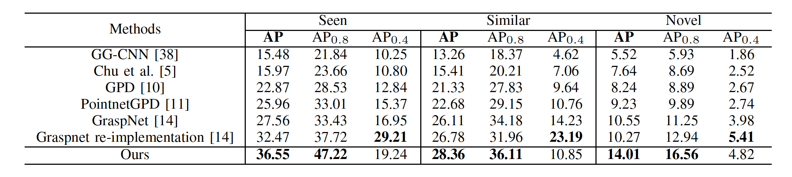

Simultaneous Semantic and Collision Learning for 6-DoF Grasp Pose Estimation
1Chinese Academy of Sciences,
2ByteDance AI Lab,
3The Chinese University of Hong Kong
 |
|
|  |
@inproceedings{li2021sscl,
title={Simultaneous Semantic and Collision Learning for 6-DoF Grasp Pose Estimation},
Yiming Li1, Tao Kong2, Ruihang Chu3, Yifeng Li2, Peng Wang1 and Lei Li2
author={Li, Yiming and Kong, Tao and Chu, Ruihang and Li, Yifeng, Wang, Peng and Li, Lei},
booktitle = {None},
year={2021}
}